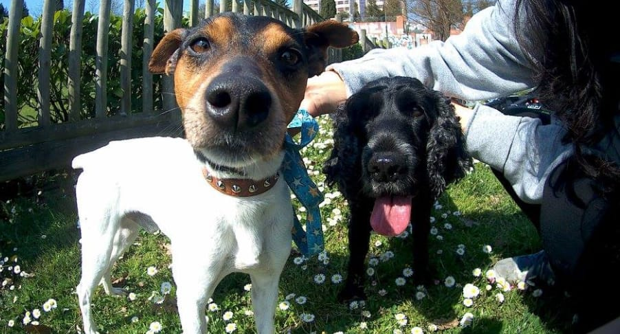
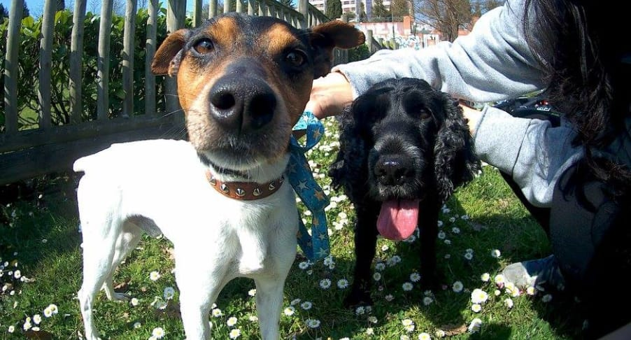

SCROLL
Max's Story
Meet Max! -A dog adopted from an animal shelter
Discover the importance of adopting animals to give them a new home and lots of love  Start »
Start »
Max's Story
-
The Meeting
During summer 2017, JR was a volunteer at a animal shelter. His role consisted on going for a walk with the dogs and to raise awareness about the importance of adopting animals in need of a new home. One day, a new dog came to the shelter. This dog was wet and seemed very frightened. Some people had took him from a road during a rainy day. JR saw him for the first time when taking pictures of the dogs within the shelter.
He then realised that this dog was new at the place as he didn't recalled seeing him before. In any case, JR took him photos to increase the dog's probability of being adopted by some family. As the days passed, JR kept going everyday to the animal shelter to fulfill his duty. However, he soon realised something...
-
Looking for a dog
Everytime he came to the shelter, all the dogs barked at him as a way of welcome, yet this new dog was the only one who didn't, preferring to stare at him from the distance. JR wasn't particularly interested in the new dog, though in reality, he was looking for a dog to take home with him. For JR, his ideal dog had to be cheerful and very active, a dog he could play with and go to excersie together. In his mind, JR had already chosen a dog from the shelter he decided he was going to adopt. Unfortunately, when JR went to officially adopt the dog, he found out that the dog was already adopted. JR felt very upset despite knowing the dog would have a family to look after him and take care of him. So, JR could only wish for the dog's happiness.
Max's Story
-
Not giving up
The days passed, and JR kept taking pictures of the dogs, although occasionally he would also upload videos of the dogs. He was convinced that active promotion was the best strategy for people to notice the pets living in the shelter. Additionaly, during this time the new dog had been relocated to other cage within the shelter.
The new cage was meant for small dogs like him, but the dog was also removed from his previous cage because he refused to eat. JR realised that the new dog was becoming skinnier very quick as the bones of his body stood out prominently. This caused JR to be moved, deciding to approach the dog out of pity to pet him behind the bars.
-
The decision
Just then, the dog made a gesture that took JR for suprise. When JR put his hand through the bars, the little dog suddendly grabbed him with his little paws very strongly like a hug. For JR it was as if the dog was trying to say "don't leave me". This special moment prompted JR to made up his mind, he would adopt this dog whatever the circumstances. This act of love expressed by the dog, moved his heart, knowing he would be unable to leave him anymore in a place like that.
After talking with his mother and arriving to an agreement, JR could take the dog out of the shelter. However, he could do so under the criteria of temporary care while looking for a home for him. As soon as the dog was freed and found himself out of the shelter, the dog kept crawling their legs, and moving his tail full of happiness.
Max's Story
-
A new home
Out of the shelter the dog's behaviour started to change little by little, becoming more active and eating all the food JR fed him. Once at home, JR named him Max and introduced him to Toby, his first dog. Although, JR had to keep advertising Max to find a suitable family who might adopt him, JR's real goal was to adopt Max himself. Luckily, after months of effort to find new owners, no one appeared to be interested in Max.
Finally, JR was able to adopt Max. During those months, Max became someone very dear to JR's family too. In that cage at the shelter, Max used to be miserable, but the light came to his eyes once again by staying at a cosy home. Only then, JR realised that each lonely and negelected animal deserves to have such oportunity to live in a secure home.
-
A new family
At first, Max adaptation to his new environment was not easy. He used to pee at home, didn't like showers and ate very little. In addition, sometimes Toby would get jealous as he used to have all the attention for himself (a very spoiled dog). Nevertheless, since the beginning, Max respected Toby, only bothering him when Max wanted to play. Very soon, Toby learnt to be in company of Max, so he wouldn't feel lonely anymore while being alone at home. Thus, patience, unconditional love and a new companion allowed Max to be less fearful. Now, Max has become part of the family and he is loved by everyone around him. Max is also very healthy and likes to play a lot, expressing in this way his happiness to have a home.
 

ABOUT US
Andrea V.
Author
I want to thank my instructors and CodeFirst:Girls for giving me the opportunity to learn some coding skills and website design. This has been an inspiring journey.
RHUL University Contact
Have you enjoined this story?
Max has found a home but there are many animals still waiting out there to find a loving home
So if you are thinking or you want to adopt a pet
› Flip this card! ‹

Josue Rojas
Story's Protagonist
A defender of animal's rights who loves them with all his heart. Always thinking about how to make this world a better place.
Keep up your good work!
Max and Toby's owner